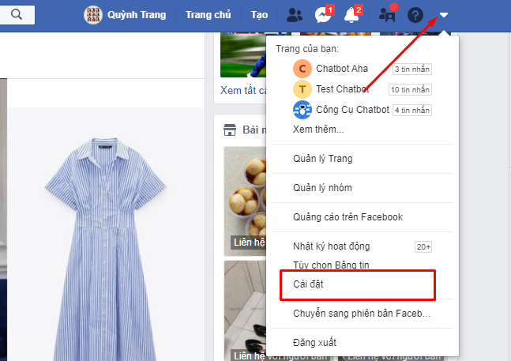
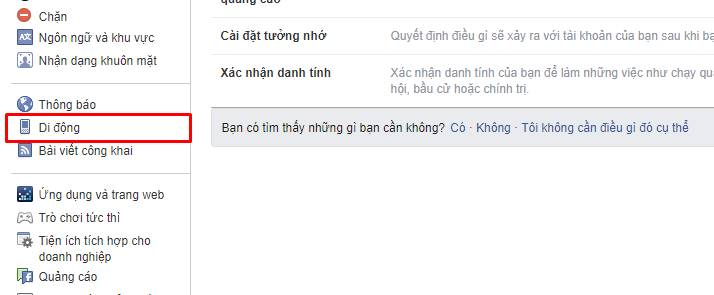
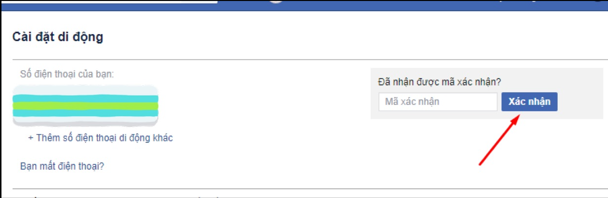

Khắc phục lỗi Facebook không gửi mã xác nhận về điện thoại & email

Ty Nguyen
CEO ❤️ AhaChat. Love babies & chatbot.Với người dùng Facebook chắc hẳn không còn lạ lẫm với việc bảo mật 2 lớp để đảm bảo an toàn cho tài khoản Facebook cá nhân. Tuy nhiên khi bạn dùng bảo mật 2 lớp đôi lúc lại xảy ra tình trạng Facebook không gửi mã xác nhận về điện thoại hoặc email bạn đã đăng ký. Vậy để khắc phục lỗi Facebook không gửi mã xác nhận về điện thoại & email phải làm thế nào? Bài viết dưới đây giúp bạn giải đáp được vấn đề đó, cùng theo dõi nhé
1. Một số nguyên nhân Facebook không gửi mã xác nhận về điện thoại & email
Khi bạn gặp phải sự cố Facebook không gửi mã xác nhận về điện thoại hoặc email, có thể bạn bị rơi vào một số nguyên nhân sau:
Số điện thoại của bạn khi đăng ký tài khoản Facebook bị sai
Có thể bạn không nhận được mã xác nhận Facebook do bị nghẽn mạng
Bạn nhập sai email khi đăng ký tài khoản Facebook
Email mã xác nhận có thể nằm trong mục thư rác hoặc spam hoặc email xã hội
Vậy cách khắc phục khi gặp lỗi Facebook không gửi mã xác nhận về điện thoại hoặc email có khó không? Bạn đọc theo dõi tiếp bài viết để có câu trả lời cho riêng mình nhé.
2. Cách khắc phục lỗi Facebook không gửi mã xác nhận về email
Cách khắc phục lỗi Facebook không gửi mã xác nhận về email
Nếu bạn dùng email để tạo tài khoản Facebook thì khi cần mã xác minh hoặc liên kết xác minh bảo mật 2 lớp, Facebook sẽ gửi mã xác nhận vào email bạn đã đăng ký. Trường hợp, bạn không nhận được mã xác minh qua email, bạn thực hiện theo các biện pháp sau để có thể khắc phục lỗi:
Đầu tiên, bạn cần phải kiểm tra việc bạn đã nhập đúng tài khoản email chưa, nếu chưa hãy nhập lại cho đúng.
Bạn hãy kiểm tra thư mục rác hoặc mục email xã hội trong tài khoản email của bạn.
Bạn bấm Gửi lại mã để thử lại lần nữa xem mã có về email không vì có thể thời điểm trước bị nghẽn mạng.
3. Cách khắc phục lỗi Facebook không gửi mã xác nhận về điện thoại
Có nhiều cách khắc phục Facebook không gửi mã xác nhận về điện thoại
Ngoài lập tài khoản Facebook bằng email thì một số người dùng sử dụng số điện thoại để lập tài khoản và nhận mã xác minh bảo mật 2 lớp. Vậy khi gặp phải lỗi Facebook không gửi mã xác nhận về điện thoại, bạn có thể dựa vào nguyên nhân để lựa chọn cách khắc phục phù hợp. Một vài cách khắc phục đơn giản và dễ thực hiện tương ứng với các trường hợp dễ xảy ra, đó là:
Cách 1: Số điện thoại của bạn bị sai khi đăng ký cần chỉnh sửa lại số
Số điện thoại bị sai là trường hợp khá nhiều người dùng facebook gặp phải dẫn đến việc Facebook không gửi mã xác nhận về điện thoại được. Để khắc phục lỗi không gửi mã xác nhận trong trường hợp này, bạn thực hiện theo các bước hướng dẫn sau:
Bước 1: Đầu tiên, bạn truy cập vào tài khoản Facebook cá nhân của bạn, bấm vào biểu tượng hình tam giác ngược để vào mục Cài đặt.

Bước 2: Từ giao diện mục Cài đặt, bạn tìm và bấm chọn vào mục Di động ở menu bên trái màn hình. Tại đây, bạn kiểm tra xem số điện thoại của bạn đã chính xác chưa, nếu chưa đúng hãy chỉnh sửa lại cho đúng số điện thoại của bạn.
Thường thì, bạn có thể bị sai số điện thoại do cách nhập thiếu mã vùng hoặc thừa số 0 sau mã vùng. Vì vậy khi kiểm tra số điện thoại bạn cũng nên lưu đến vấn đề này.

Bước 3: Nếu bị sai số cần chỉnh sửa, khi nhập lại số bạn nên nhớ đến mã vùng của Việt Nam là +84 và khi nhập số điện thoại thì không cần nhập số 0 ở đầu tiên. Sau khi nhập xong bạn bấm Tiếp tục.
Bước 4: Cuối cùng, khi bạn nhập xong số điện thoại, Facebook sẽ gửi đến tin nhắn số điện thoại của bạn mã xác nhận, bạn chỉ cần nhập mã đó và bấm Xác nhận là xong.

Cách 2: Nhận cuộc gọi xác minh thay vì nhận tin nhắn SMS
Có thể đôi lúc tin nhắn gửi mã xác nhận từ Facebook sẽ không đến được với bạn do bị chặn. Thay vì gửi tin nhắn SMS bạn có thể nhận mã từ cuộc gọi đôi lúc sẽ dễ dàng hơn.
Bước 1: Bạn truy cập vào đường link dưới đây
https://www.facebook.com/confirmemail.php
Bước 2: Sau khi bấm vào đường link đó, tại giao diện chính bạn bấm chọn Bạn chưa nhận được SMS.
Bước 3: Bạn bấm chọn vào mục Gọi (số di động) để nhận mã xác minh từ Facebook gọi đến.
Bước 4: Lúc này, tổng đài sẽ gọi đến số điện thoại của bạn và đọc mã xác nhận cho bạn. Bạn chỉ cần nghe mã xác nhận, nhập theo mã đó và bấm Xác nhận là hoàn thành.
Cách 3: Gửi lại SMS
Nếu mã xác nhận không gửi về điện thoại do nghẽn mạng thì bạn có thể khắc phục lỗi bằng cách gửi lại SMS. Các bước thực hiện như sau:
Bước 1: Cũng giống như trường hợp nhận mã xác minh qua cuộc gọi, trường hợp gửi lại SMS bạn cũng cần phải truy cập vào đường link:
https://www.facebook.com/confirmemail.php
Bước 2: Xuất hiện giao diện chính, bạn bấm chọn Bạn chưa nhận được SMS?
Bước 3: Bạn chọn tiếp Gửi lại SMS và chờ Facebook gửi lại SMS đến số điện thoại của bạn, khi có mã về bạn nhập lại mã và bấm Xác nhận là xong.
Cách 4: Nhận mã xác nhận Facebook bằng cách soạn tin nhắn đến tổng đài.
Nếu bạn không thể nhận mã xác nhận từ nước ngoài bằng các cách trên thì có thể tự gửi tin nhắn đến tổng đài trong nước. Cách thực hiện như sau:
- Đối với nhà mạng Viettel
Nếu tài khoản Facebook của bạn đăng ký bằng số điện thoại của nhà mạng Viettel, bạn có thể gửi tin nhắn đến tổng đài để nhận mã xác nhận theo cú pháp như sau: Soạn F gửi 9223 (giá cước là 1000đ/tin nhắn).
Sau khi bạn gửi tin nhắn, tổng đài sẽ gửi lại bạn mã xác nhận và bạn chỉ cần nhập mã đó vào, bấm Xác nhận là xong.
- Đối với nhà mạng Vinaphone
Với số điện thoại đăng ký Facebook thuộc nhà mạng Vinaphone, bạn soạn tin theo cú pháp: DK gửi 1571, giá cước là 1000đ/tin nhắn.
Khi tổng đài gửi lại mã xác nhận cho bạn, bạn nhập mã vào và bấm Xác nhận.
- Đối với nhà mạng Mobiphone
Với tổng đài Mobiphone, cú pháp gửi tin nhắn đến tổng đài để lấy mã xác nhận Facebook là DK F1 gửi 32665, phí dịch vụ là 1000 đồng 1 tin nhắn.
- Đối với nhà mạng Vietnamobile
Cuối cùng là nhà mạng Vietnamobile, để nhận được mã xác nhận Facebook khi gặp lỗi, bạn soạn tin theo cú pháp FB gửi 32665 để nhận lại mã.
Khi bạn gửi tin nhắn đến tổng đài để lấy lại mã xác nhận từ Facebook, để tránh bị spam tin nhắn từ các số tổng đài và bị mất thêm tiền, sau khi nhập xong mã bạn nhớ huỷ dịch vụ. Tất cả các nhà mạng đều có chung cách hủy theo cú pháp HUY và gửi đến số điện thoại của tổng đài theo nhà mạng bạn đã đăng ký.
Trên đây là bài viết hướng dẫn bạn cách khắc phục lỗi khi Facebook không gửi mã xác nhận về điện thoại & email. Trong quá trình thực hiện có thắc mắc nào cần giải đáp thì đừng ngần ngại để lại bình luận dưới đây, chúng tôi sẽ phản hồi bạn trong thời gian sớm nhất. Hy vọng bài viết hữu ích đối với bạn, chúc bạn thực hiện thành công.